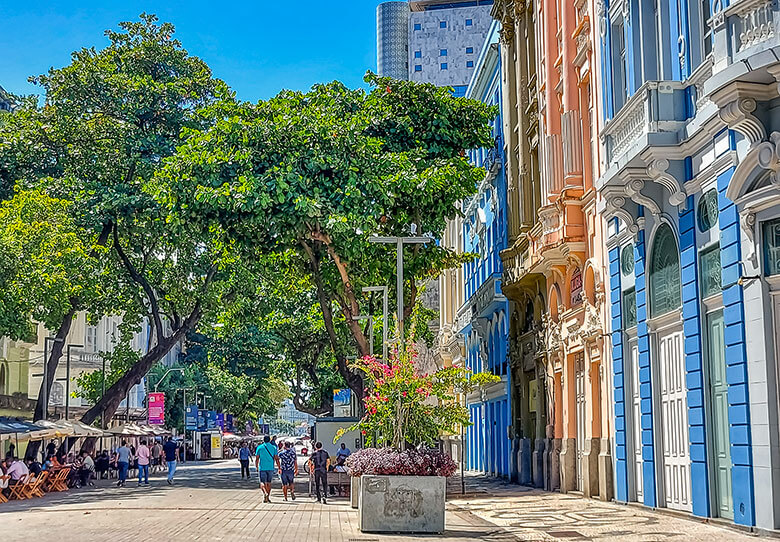

Recife Antigo
 O bairro do Recife Antigo é repleto de história e cultura. Suas ruas de paralelepípedo, casarões coloridos e igrejas antigas são um convite para um passeio tranquilo. A região também abriga diversos museus, restaurantes e galerias de arte.